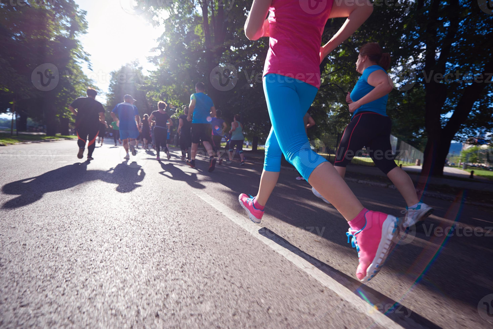
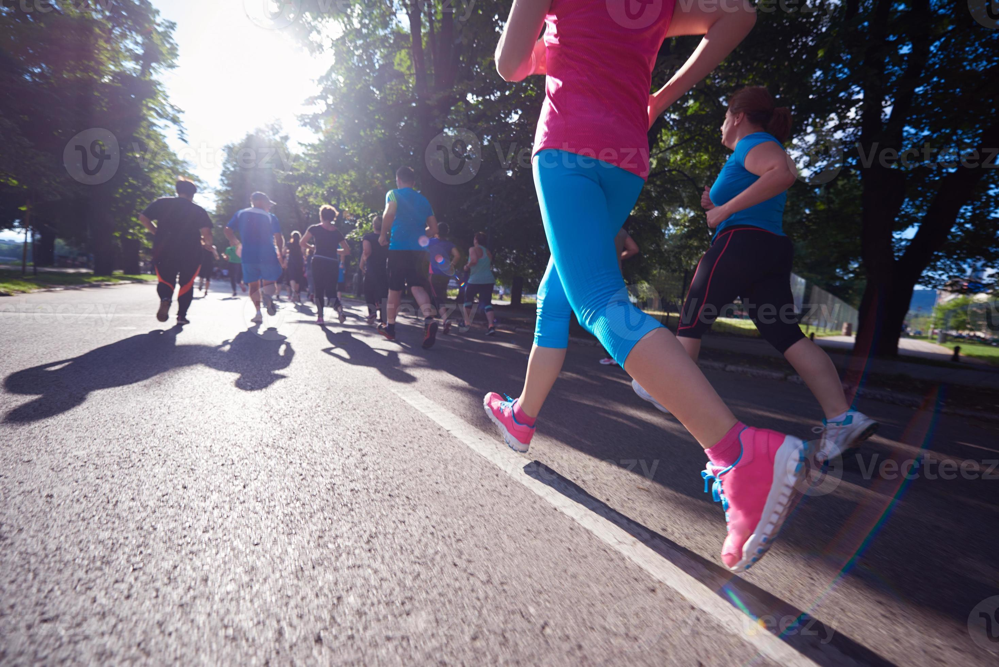

Welcome to My Personal Website
Chan Sin Pei
Hello! I'm Chan Sin Pei, a passionate IT student with diverse interests in programming, fitness, and outdoor activities. This website showcases my personal journey, hobbies, and memorable campus experiences.
Biodata
Parit Raja
Batu Pahat
Johor
Hobbies
Click on any hobby to see more details and photos:
Gym
Regular workout to stay fit and healthy
Yoga
For mental peace and flexibility
Jogging
Morning runs to start the day fresh
Hiking
Exploring nature and challenging myself
My Gym Routine
I regularly visit the gym 4-5 times a week to maintain my fitness. My routine includes weight training, cardio exercises, and core workouts. Staying active helps me maintain energy for my studies and personal projects.
My Yoga Practice

Yoga helps me find balance between my academic life and personal well-being. I practice yoga every morning to start my day with clarity and focus. It's amazing how much it improves both physical flexibility and mental resilience.
My Jogging Sessions
 

I love jogging around campus in the early mornings. It's a great way to explore the area while getting exercise. My usual route takes me around the lake and through the botanical gardens - about 5km total.
My Hiking Adventures
Hiking is my favorite weekend activity. I've conquered several peaks including Gunung Lambak with my friends. The challenge of reaching the summit and the breathtaking views make all the effort worthwhile.
Campus Life
My campus life has been an incredible mix of learning, adventures, and unforgettable moments! üåü I've joined amazing programs like the Laravel Bootcamp, explored the International Book Fair in Kuala Lumpur, and attended the inspiring Graduation Aspire event.
When it comes to fun, my friends and I made unforgettable memories‚Äîsplashing around at Desaru Adventure Waterpark, celebrating birthdays, and experiencing the vibrant Feskon Carnival Festival. One of my favorite adventures? Hiking Gunung Lambak in Kluang with my friends and even our awesome lecturers! üèûÔ∏è
Every day brings something new‚Äîwhether it's learning, exploring, or just hanging out with the best people. Campus life isn't just about studies; it's about the experiences that shape us! üíõ
Memorable Events
Laravel Bootcamp
Intensive web development training
International Book Fair
Exploring knowledge in Kuala Lumpur
Desaru Adventure
Fun day with friends at waterpark
Gunung Lambak Hike
Challenging adventure with friends